Il blog
Neurodiversità, istruzione parentale, materiali e vita di famiglia.
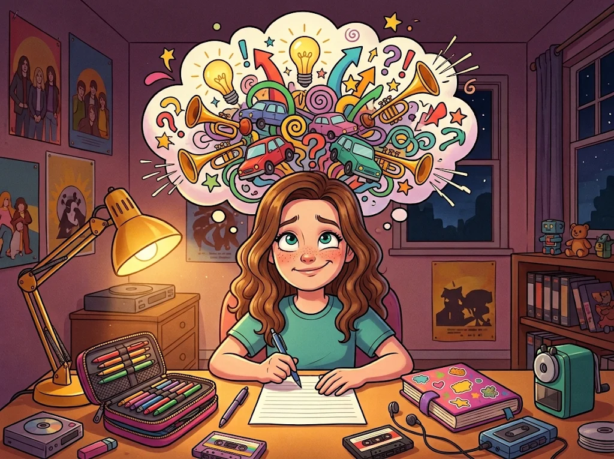
Avevo tredici anni, un foglio bianco e un registratore a cassette
Avevo tredici anni. Prima superiore, primo tema. Da fare a casa. Me lo ricordo ancora, quel foglio. Bianco, a righe, con il margine a sinistra. Era tardi, e io ero ancora lì, con la luce accesa e la penna in mano…
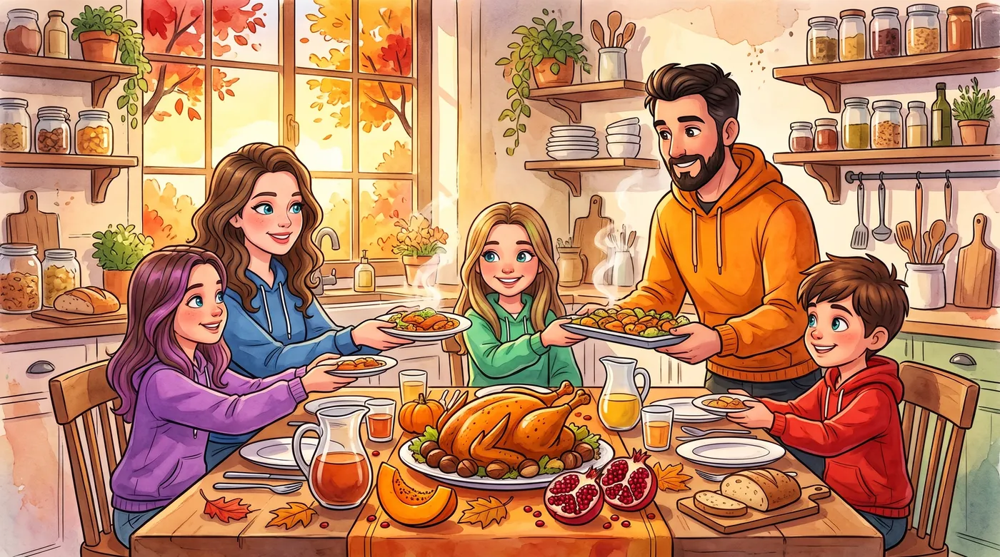
Il Thanksgiving a casa nostra: una festa che non è la nostra, ma ci serve
Giovedì 26 novembre gli americani festeggiano il Thanksgiving, il Giorno del Ringraziamento. Da noi è una festa straniera. Eppure a casa nostra lo festeggiamo da sette o otto anni, ormai ho perso il conto…
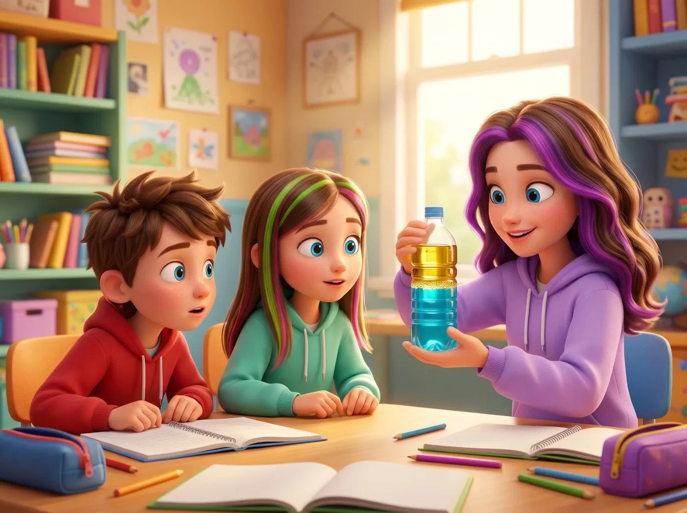
Dalla fiaba alla scienza: perché olio e acqua non si mescolano? (Ispirato a "La gabbianella e il gatto")
Leggere un grande classico della letteratura per ragazzi come “Storia di una gabbianella e del gatto che le insegnò a volare” di Luis Sepúlveda offre spunti meravigliosi che vanno ben oltre…

Quando l'eccellenza diventa veleno: Perché Beatrice ha scelto il Tatami (e la sua dignità)
C’è un confine sottile, quasi invisibile, tra l’esigenza di un istruttore e l’abuso psicologico. È una linea tracciata sulla sabbia che spesso, nel nome del "talento", della "perfezione…

Quando le parole fanno le ballerine
Ci sono pagine dove le parole stanno ferme e composte, come bambini in fila il primo giorno di scuola. E poi ci sono pagine dove fanno le ballerine…
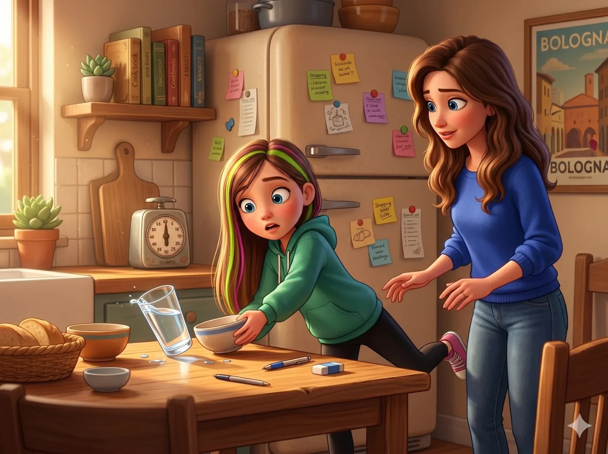
ADHD: Quello che nessuno ti dice finché non lo vivi sulla pelle. LA TUA!!!
C'è una scena che si ripete in questa casa con una frequenza che ormai dovrei segnare sul calendario. Ginevra entra in cucina come se stesse sfuggendo a qualcosa - gambe che vanno più…
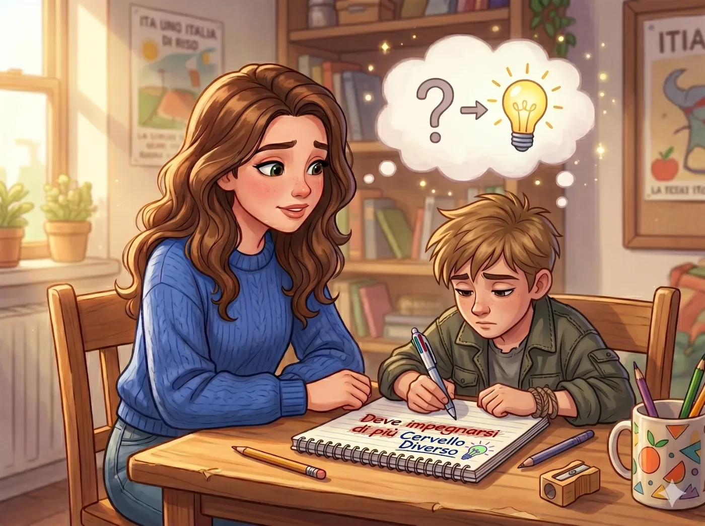
DSA: Non È Pigrizia. È un Cervello che Chiede un'Altra Porta.
Avevo diciassette anni e facevo la doposcuolista. Andavo nelle case, mi sedevo ai tavoli della cucina, aprivo i diari scolastici e cercavo di rimettere insieme i pezzi di bambini che dalla…

In Istruzione Parentale la colpa è sempre della mamma (e perché questo è il nostro superpotere)
Ci sono mattine in cui mi siedo al tavolo della cucina con il mio caffè ancora caldo, guardo i miei figli e penso: "Oggi andrà bene. Oggi saremo tutti e quattro sereni, produttivi, in…
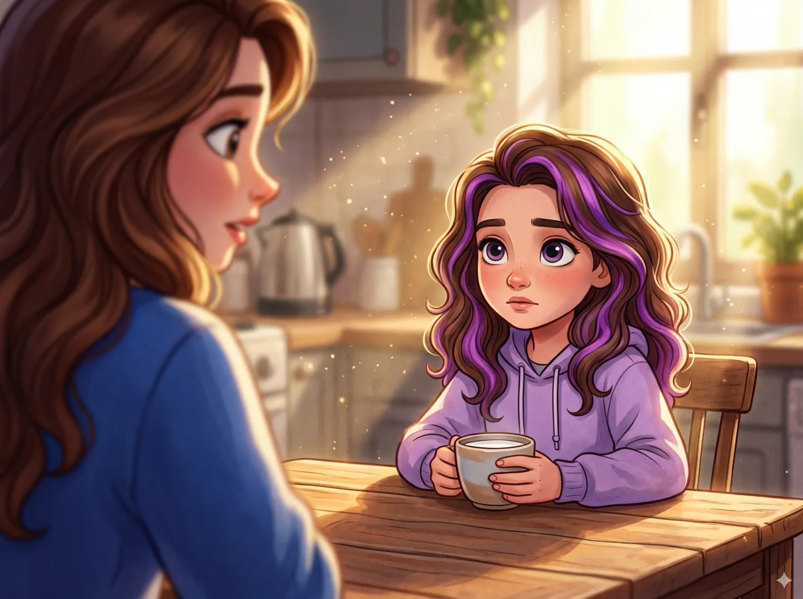
Plusdotazione: Perché il QI di tuo figlio è solo l'inizio della storia
Il caffè si raffredda sul bancone. Questo è il dettaglio che ricordo meglio di quella mattina. Non le parole esatte di Beatrice, non la luce che entrava dalla finestra della cucina - il…
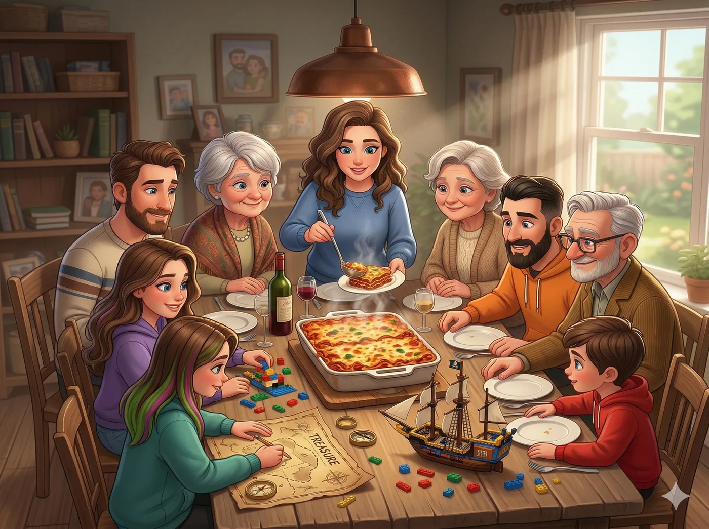
Pasqua tra Big Bang, lasagne e qualcuno sotto il tavolo
C'è una domanda che mi ronza in testa ogni volta che si avvicina una festa: come si trasmette il senso del sacro senza farlo diventare un dogma calato dall'alto? Come si racconta la fede…
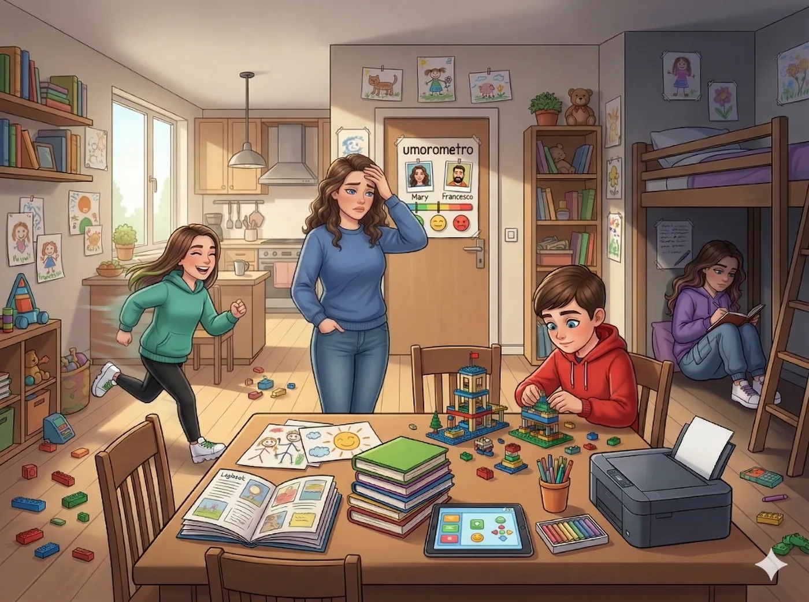
La neurodiversità non è un guasto: è un codice
Forse ieri sera sei andata a dormire con quella strana sensazione al petto. Quel miscuglio di amore infinito e di stanchezza che ti fa chiedere: "Ma sto facendo bene? Perché oggi è stata…
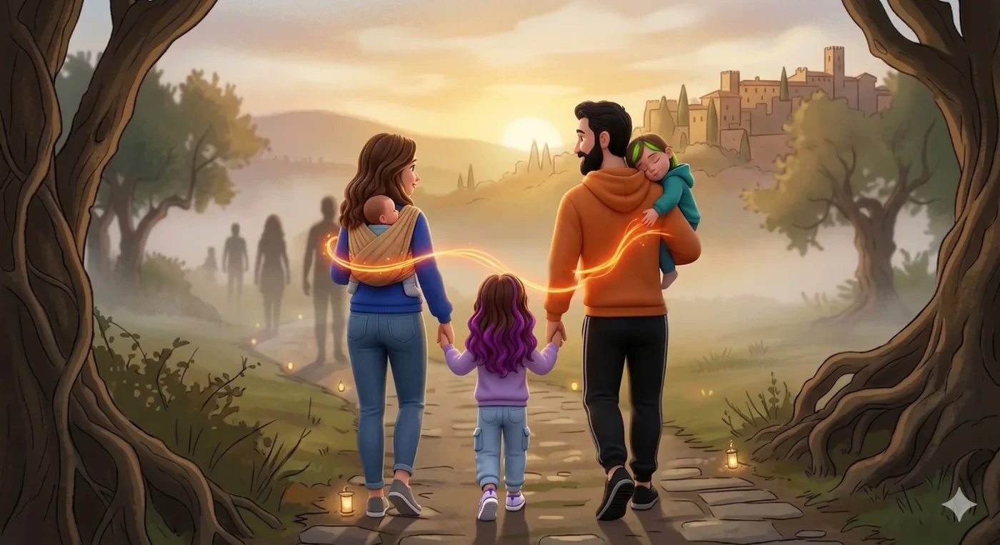
La mia roccia: il ruolo del papà
Te l'avevo promesso lunedì scorso: oggi ti racconto di Francesco. Francesco è quello che, quando parto per la tangente con le mie mille idee, mi porta un bicchiere d'acqua. È quello che mi…
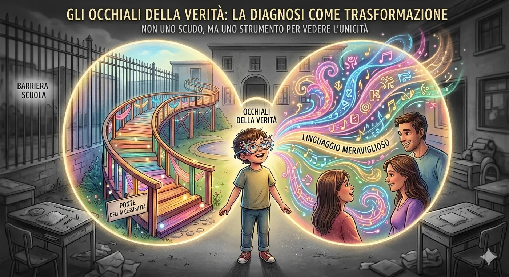
La vocina che aveva ragione
"È esagerata." "È solo una fase." "Deve farla impegnare di più." "È una visionaria." Me le sono sentite dire tutte, per anni. Me le diceva la pediatra. Me le dicevano le maestre. Me le…
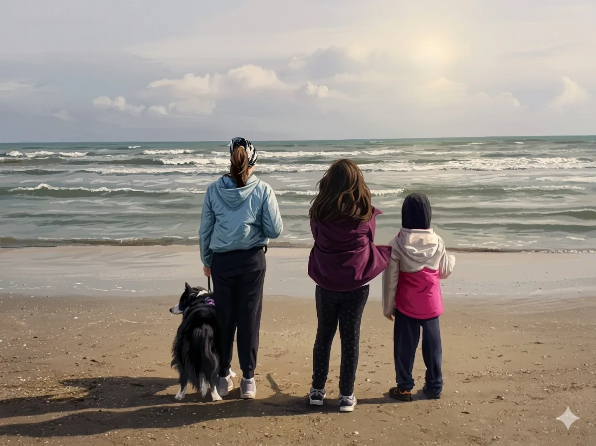
Ti presento i miei tre uragani
Una volta ho raccontato ai miei figli un episodio in cui mi avevano "presa, messa in padella e fatta alla brace". Federico era sconvolto: "Mamma, ma tu dovevi essere molto piccola, perché…
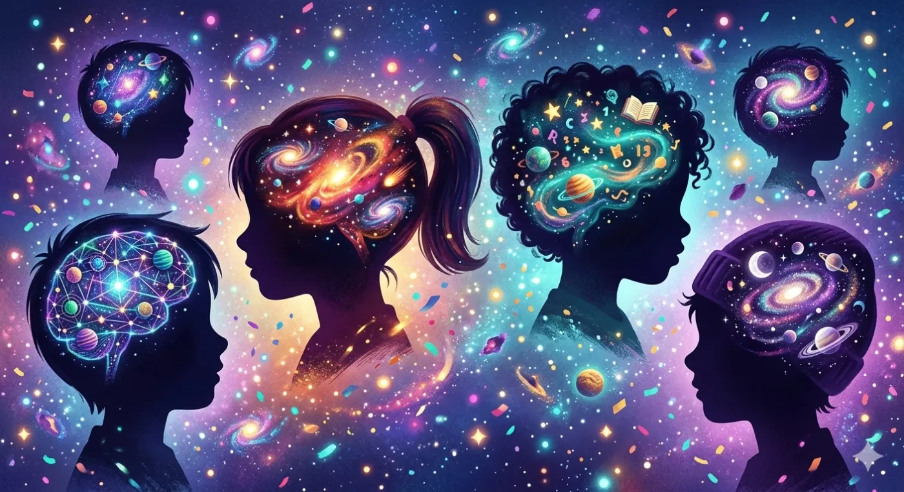
Perché i Materiali Inclusivi sono la Nostra Bacchetta Magica?
"Mio figlio ha sorriso mentre faceva storia. Prima piangeva!" Me l'ha scritto una mamma. Che soddisfazione! In quelle due righe c'è tutto quello che un materiale inclusivo deve saper fare…
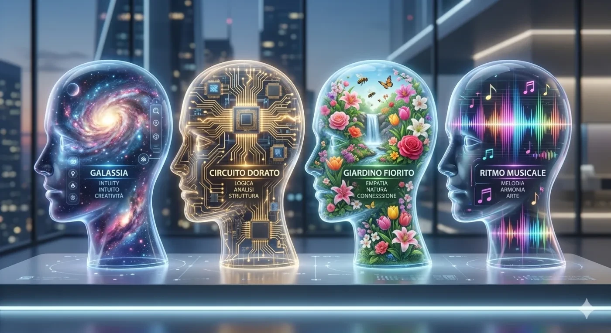
Essere e non Avere: la neurodiversità è un modo di esistere
"Affetto da autismo." Si sente dire spesso. Si sente anche "quella persona ha l'ADHD", come se si avesse l'influenza. Io invece dico: mio figlio è autistico. Tra "essere" e "avere" c'è una…
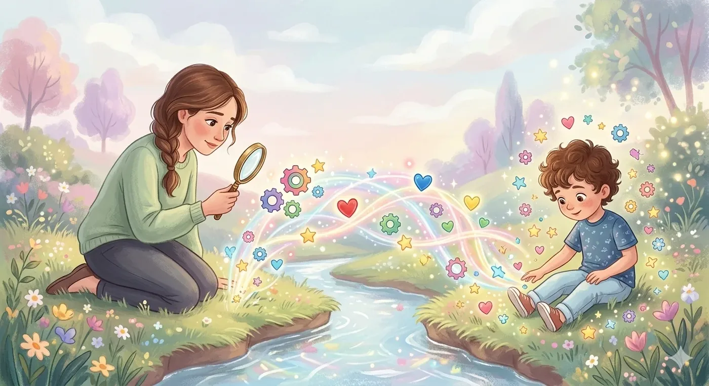
I dialetti della neurodiversità
Quando Federico si isolava con le sue costruzioni, sembrava che ci ignorasse. Non ci ignorava affatto. Era nel suo laboratorio creativo, e aveva da fare. Beatrice e Ginevra, con tutta…
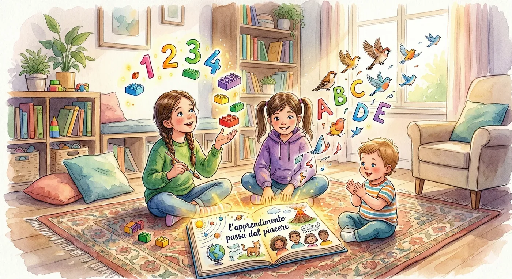
Tre figli, tre modi di imparare: perché è nata Life School Family
"Il programma è questo, ci dobbiamo adattare!" Me l'ha detto un'insegnante, davanti a un bambino in difficoltà. Lo diceva con le migliori intenzioni, e con un filo di frustrazione. Io…